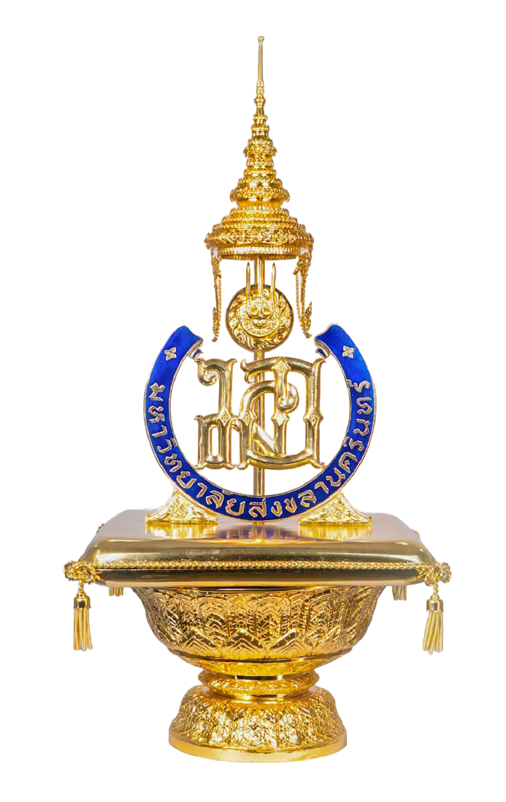

Our mission is to develop graduates and knowledge that connect the laboratory to the clinic, so that scientific ideas become technologies people can rely on.

Our vision
To be a leading center in biomedical sciences and biomedical engineering, recognized for research that improves health and for graduates who lead in their fields.
Our mission
To provide rigorous, collaborative education, to carry out research that addresses real health needs, and to work with hospitals, industry and communities to put results into practice.
What we stand for
Three values guide how we teach, research and work together.

Scientific integrity
We value careful methods, honest reporting and respect for the evidence behind every result.

Collaboration
Biology, medicine and engineering work best together, so we build teams across disciplines.

Service to society
We measure our success by the benefit our work brings to patients, clinicians and communities.
How we work toward it
Four areas where the mission shows up in our daily activity.
Education
Graduate programs that combine strong fundamentals with hands-on laboratory and design experience.
Research
Projects in disease mechanisms, diagnostics, medical devices and biomaterials with clear clinical relevance.
Partnership
Joint work with hospitals, companies and public agencies to test ideas in real settings.
Community
Training, outreach and knowledge sharing that bring biomedical advances to the wider public.